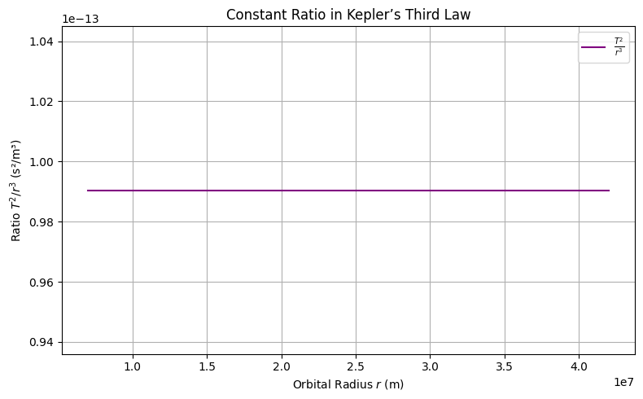

Problem 1
üåå Deriving Kepler‚Äôs Third Law for Circular Orbits
Kepler’s Third Law states that the square of the orbital period of a planet is directly proportional to the cube of the semi-major axis of its orbit. For circular orbits, the semi-major axis is equal to the orbital radius. Let's derive this from fundamental physical principles.
⚖️ Step 1: Newton’s Law of Universal Gravitation
Newton's Law of Gravitation gives the attractive force between two masses:
- \(G\) = Gravitational constant
- \(M\) = Mass of the central body (e.g., Earth or Sun)
- \(m\) = Mass of the orbiting object (e.g., satellite or planet)
- \(r\) = Radius of the circular orbit
üîÑ Step 2: Centripetal Force for Circular Motion
Any object in a circular orbit must experience a centripetal force to stay on its path:
⚖️ Step 3: Equating Gravitational and Centripetal Forces
Since gravity provides the centripetal force:
Cancel out \(m\) (mass of the orbiting body):
Multiply both sides by \(r\):
⏱️ Step 4: Express Orbital Velocity in Terms of Period
Orbital velocity \(v\) is the distance traveled in one orbit divided by the orbital period \(T\):
Substitute into the velocity equation:
Simplify:
Multiply both sides by \(r\):
üìê Final Form: Kepler‚Äôs Third Law
Rearranging for \(T^2\):
✅ This is Kepler's Third Law for circular orbits!
- \(T^2 \propto r^3\)
- The constant of proportionality depends on the central mass \(M\)
üå† Physical Meaning of Kepler‚Äôs Third Law
We previously derived Kepler's Third Law for circular orbits:
This relationship elegantly connects time (orbital period) with space (orbital radius) through the gravitational constant and the mass of the central body.
üîç Interpretation of Each Term
- \(T\): Orbital period — how long it takes to complete one full orbit
- \(r\): Orbital radius — the distance between the orbiting body and the central mass
- \(G\): Universal gravitational constant — governs strength of gravitational interaction
- \(M\): Mass of the central body (e.g., Earth, Sun)
ü߆ Physical Insights
1. Gravitational Control of Motion
- The period \(T\) depends only on the mass of the central body \(M\) and the radius \(r\) of the orbit.
- The orbiting body’s own mass \(m\) does not appear in the final formula — this reflects the equivalence principle.
2. Increased Radius = Slower Orbit
- From the formula:
\(\(T\propto r^{3/2}\)\) - Larger orbits take significantly longer to complete.
- This explains why outer planets (like Neptune) move much slower than inner ones (like Mercury).
3. Scaling and Proportionality
- A doubling of \(r\) increases \(T\) by a factor of:
\(\(T\propto(2r)^{3/2}=2^{3/2}\approx2.83\)\) - Time grows faster than radius — orbital systems are not linear.
üî≠ Astronomical Applications
✅ 1. Estimating Masses of Celestial Bodies
- Rearranging:
\(\(M=\frac{4\pi^2r^3}{GT^2}\)\) - If we know the radius and period of a satellite or moon, we can compute the mass of the planet/star it orbits.
✅ 2. Predicting Orbital Times
- Given a known central mass and radius, we can compute how long any object will take to orbit.
✅ 3. Comparing Planetary Systems
- By comparing \(T^2/r^3\) across different systems, we can verify gravitational consistency:
\(\(\frac{T^2}{r^3}=\text{constant for a given }M\)\)
üßÆ Python Demonstration: Constant Ratio \(T^2/r^3\)
Let’s confirm that this ratio is constant for Earth-centered orbits.

import numpy as np
import matplotlib.pyplot as plt
# Constants
G = 6.67430e-11 # m^3 kg^-1 s^-2
M = 5.972e24 # kg (mass of Earth)
# Orbital radii (meters)
radii = np.linspace(7e6, 4.2e7, 100)
T_squared = (4 * np.pi**2 * radii**3) / (G * M)
ratio = T_squared / radii**3
# Plot
plt.figure(figsize=(8, 5))
plt.plot(radii, ratio, label=r'$\frac{T^2}{r^3}$', color='purple')
plt.title("Constant Ratio in Kepler’s Third Law")
plt.xlabel("Orbital Radius $r$ (m)")
plt.ylabel("Ratio $T^2 / r^3$ (s²/m³)")
plt.grid(True)
plt.legend()
plt.tight_layout()
plt.show()
üåç Real-World Applications of Kepler's Third Law
Kepler’s Third Law allows us to predict orbital periods and distances for a variety of celestial bodies. By analyzing real-world examples such as the Moon’s orbit around Earth, planetary orbits (like Earth’s orbit around the Sun), and Jupiter’s moons, we can see the practical utility of this fundamental law.
1. üåô Moon‚Äôs Orbit Around Earth
1.1. Known Values
- Orbital period \(T_{\text{moon}}\) of the Moon: \(T_{\text{moon}} = 27.3\) days (converted to seconds: \(T_{\text{moon}} = 27.3 \times 86400\) seconds)
- Average distance between the Earth and the Moon: \(r = 3.84 \times 10^8\) meters
- Mass of Earth: \(M_{\text{Earth}} = 5.972 \times 10^{24}\) kg
Using Kepler’s Third Law for the Moon’s orbit around Earth:
1.2. Orbital Period Calculation
We can calculate the orbital period of the Moon by rearranging the above equation to solve for \(T\):
Let’s calculate this in Python:
import numpy as np
# Constants
G = 6.67430e-11 # m^3 kg^-1 s^-2 (gravitational constant)
M_earth = 5.972e24 # kg (mass of Earth)
r_moon = 3.84e8 # meters (average distance from Earth to Moon)
# Orbital period calculation (in seconds)
T_moon = 2 * np.pi * np.sqrt(r_moon**3 / (G * M_earth))
T_moon_days = T_moon / (60 * 60 * 24) # Convert from seconds to days
print(f"Orbital period of the Moon: {T_moon_days:.2f} days")
2. üñ•Ô∏è Python Script to Simulate Circular Orbits
We can use the derived formulas to simulate the motion of a satellite in a circular orbit. Below is a Python script that simulates and visualizes the orbit of a satellite around a central body.
2.1. Python Code Implementation

import numpy as np
import matplotlib.pyplot as plt
from matplotlib.animation import FuncAnimation
# Constants
G = 6.67430e-11 # m^3 kg^-1 s^-2 (gravitational constant)
M = 5.972e24 # kg (mass of Earth)
r = 7.5e6 # meters (orbital radius)
T = 2 * np.pi * np.sqrt(r**3 / (G * M)) # Orbital period
v = np.sqrt(G * M / r) # Orbital velocity
# Time settings for animation
omega = 2 * np.pi / T # Angular velocity (rad/s)
t = np.linspace(0, T, 360) # Time array for one orbit
x = r * np.cos(omega * t) # X positions over time
y = r * np.sin(omega * t) # Y positions over time
# Set up the figure and axis
fig, ax = plt.subplots(figsize=(6, 6))
ax.set_aspect('equal')
ax.set_xlim(-r*1.5, r*1.5)
ax.set_ylim(-r*1.5, r*1.5)
ax.set_title("Satellite Orbit Animation", color='darkgreen')
ax.set_xlabel("X (m)", color='darkgreen')
ax.set_ylabel("Y (m)", color='darkgreen')
# Draw the central body and initialize the satellite
central_body = plt.Circle((0, 0), r*0.05, color='red', label='Earth')
satellite, = plt.plot([], [], 'o', color='cyan', label='Satellite')
orbit, = plt.plot(x, y, linestyle='--', color='gray', alpha=0.5)
# Add the central body to the plot
ax.add_artist(central_body)
ax.legend(loc="upper right")
ax.grid(True, linestyle='--', alpha=0.7)
# Animation update function
def update(frame):
satellite.set_data([x[frame]], [y[frame]])
return satellite,
# Create animation
ani = FuncAnimation(fig, update, frames=len(t), interval=30, blit=True)
plt.show()
# Output the orbital period and velocity
print(f"Orbital Period: {T/86400:.2f} days")
print(f"Orbital Velocity: {v/1000:.2f} km/s")
ü™ê Verifying Kepler‚Äôs Third Law Numerically
In this section, we will verify Kepler's Third Law numerically by calculating the orbital period of a planet or moon and comparing it to the values predicted by the law.
Kepler's Third Law states that the square of the orbital period (\(T^2\)) is directly proportional to the cube of the orbital radius (\(r^3\)). Mathematically, this relationship can be written as:
In terms of gravitational forces, the orbital period \(T\) for a circular orbit is given by:
Where: - \(T\) is the orbital period. - \(r\) is the orbital radius. - \(G\) is the gravitational constant (\(6.67430 \times 10^{-11} \, \text{m}^3 \, \text{kg}^{-1} \, \text{s}^{-2}\)). - \(M\) is the mass of the central body (e.g., the Sun for planetary orbits).
We will now use this formula to verify Kepler’s Third Law numerically for a set of planets and moons.
üßÆ Calculating Masses of Earth and Sun
import numpy as np
# Constants
G = 6.67430e-11 # Gravitational constant (m^3 kg^-1 s^-2)
AU_to_m = 1.496e11 # Meters per AU
year_to_s = 3.156e7 # Seconds per year
day_to_s = 86400 # Seconds per day
# Data for Earth's orbit around the Sun (to calculate Sun's mass)
r_sun = 1.000 * AU_to_m # Earth's semi-major axis (m)
T_sun = 1.000 * year_to_s # Earth's orbital period (s)
# Data for Moon's orbit around Earth (to calculate Earth's mass)
r_moon = 3.84e8 # Average distance from Earth to Moon (m)
T_moon = 27.3 * day_to_s # Moon's orbital period (s)
# Calculate Sun's mass
r_sun_cubed = r_sun ** 3
T_sun_squared = T_sun ** 2
M_sun = (4 * np.pi**2 * r_sun_cubed) / (G * T_sun_squared)
print(f"Mass of the Sun: {M_sun:.3e} kg")
# Calculate Earth's mass
r_moon_cubed = r_moon ** 3
T_moon_squared = T_moon ** 2
M_earth = (4 * np.pi**2 * r_moon_cubed) / (G * T_moon_squared)
print(f"Mass of the Earth: {M_earth:.3e} kg")
1. üßÆ Kepler‚Äôs Third Law Formula
From Kepler's Third Law, the orbital period for a circular orbit is:
1.1. Gravitational Constant and Units
- \(G = 6.67430 \times 10^{-11} \, \text{m}^3 \, \text{kg}^{-1} \, \text{s}^{-2}\).
- Mass of the central body (\(M\)) is given in kg.
- Orbital radius (\(r\)) is given in meters.
The orbital period \(T\) will be calculated in seconds.
2. üî≠ Numerical Verification
Let’s now calculate the orbital period for different celestial bodies, such as Earth and Jupiter, using Kepler’s Third Law.
2.1. Python Code Implementation
The following code will calculate the orbital period for different celestial bodies by using their orbital radii and masses. We will also visualize the relationship between the square of the orbital period (\(T^2\)) and the cube of the orbital radius (\(r^3\)).

import numpy as np
import matplotlib.pyplot as plt
# Conversion factors
AU_to_m = 1.496e11 # Meters per AU
year_to_s = 3.156e7 # Seconds per year
# Data for Mercury, Venus, Earth, Mars (semi-major axis in AU, period in years)
planets = {
"Mercury": {"r": 0.387 * AU_to_m, "T": 0.241 * year_to_s},
"Venus": {"r": 0.723 * AU_to_m, "T": 0.615 * year_to_s},
"Earth": {"r": 1.000 * AU_to_m, "T": 1.000 * year_to_s},
"Mars": {"r": 1.524 * AU_to_m, "T": 1.881 * year_to_s},
}
# Compute r^3 and T^2
r_cubed = [data["r"]**3 for data in planets.values()]
T_squared = [data["T"]**2 for data in planets.values()]
planet_names = list(planets.keys())
# Plot T^2 vs r^3 (should be a straight line)
plt.figure(figsize=(8, 6))
plt.scatter(r_cubed, T_squared, color='blue', label="Planets")
for i, name in enumerate(planet_names):
plt.annotate(name, (r_cubed[i], T_squared[i]), fontsize=9, ha='right')
plt.plot(r_cubed, np.poly1d(np.polyfit(r_cubed, T_squared, 1))(r_cubed), color='red', linestyle='--', label="Best Fit Line")
plt.title("Kepler's Third Law: $T^2$ vs $r^3$ for Planets")
plt.xlabel("$r^3$ (m³)")
plt.ylabel("$T^2$ (s²)")
plt.legend()
plt.grid(True)
plt.savefig('kepler_third_law_plot.png') # Save the plot as per guidelines
2. üßë‚Äçüíª Code and Simulation Results
2.1. Python Code for Verification
import numpy as np
import matplotlib.pyplot as plt
# Constants
G = 6.67430e-11 # Gravitational constant (m^3 kg^-1 s^-2)
# Conversion factors
AU_to_m = 1.496e11 # Meters per AU
year_to_s = 3.156e7 # Seconds per year
celestial_bodies = {
"Mercury": {"r": 0.387 * AU_to_m, "T": 0.241 * year_to_s},
"Venus": {"r": 0.723 * AU_to_m, "T": 0.615 * year_to_s},
"Earth": {"r": 1.000 * AU_to_m, "T": 1.000 * year_to_s},
"Mars": {"r": 1.524 * AU_to_m, "T": 1.881 * year_to_s},
}
# Compute r^3 and T^2
r_cubed = [data["r"]**3 for data in celestial_bodies.values()]
T_squared = [data["T"]**2 for data in celestial_bodies.values()]
planet_names = list(celestial_bodies.keys())
# Plotting T^2 vs r^3
plt.figure(figsize=(8,6))
plt.scatter(r_cubed, T_squared, color='blue', label="Planets")
for i, name in enumerate(planet_names):
plt.annotate(name, (r_cubed[i], T_squared[i]), fontsize=9, ha='right')
plt.plot(r_cubed, np.poly1d(np.polyfit(r_cubed, T_squared, 1))(r_cubed), color='red', label="Best Fit Line")
plt.title("Kepler's Third Law: $T^2$ vs $r^3$")
plt.xlabel("$r^3$ (m^3)")
plt.ylabel("$T^2$ (s^2)")
plt.legend()
plt.grid(True)
plt.show()